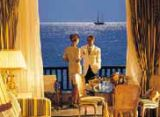
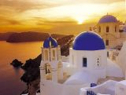

П'ять аргументів на користь Греції: Кріт, Санторіні, Родос, Корфу та Кос

Сучасних туристів
міфами не здивуєш, тому Греція всебічно розвиває
інфраструктуру туризму на материковій та острівній територіях.
Про перспективи та потенціал грецького спрямування в
напередодні гарячого сезону розповідає Дмитро АРУТЮНОВ,
генеральний директор компанії "Арт-тур".
Модні тенденції в туризмі:

включно Людина на рік випиває в
в середньому 150 літрів чаю. Незважаючи на значний вік чаю,
причини високої популярності цього напою залишаються загадкою та
по цей день. Щоб дізнатися їх і розібратися до кінця в тому, що
ж таке чай, як і коли його пити, команда Foresta Tropicana
Hotel вирішила провести «Включаючи фестиваль» - добрий сімейний
свято за чашкою чаю.
10 правил вибору туру до Греції

У кожного з нас є
улюблений фотоальбом, в якому зберігаються фотографії,
що нагадують про найяскравіші моменти нашого життя. І звичайно
А в цьому альбомі є хроніка наших подорожей. Як
здорово, перегорнути його знову і знову і ще раз поринути в
свої враження про веселі канікули та пофантазувати про
майбутній відпустці!
Марокко на будь-який смак

Зростаюча популярність
марокканського напряму серед російських туристів цілком
зрозуміла – природа, чудовий клімат та пляжі Атлантики
(повітря з високим вмістом йоду), великий вибір готелів з
розвиненою інфраструктурою на найкращому курорті узбережжя у місті
Агадір. Найбільш престижні готелі – Dorint Atlantic Palace
5*, Palais des Roses 5*, Agadir Beach Club 4*, Riu Tikida
Dunas 4*, Iberostar 4*.